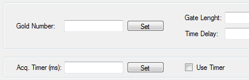

Graal V2P Acquisition
Lead developer
Graal Acquisition is a stand-alone application used to import and save data from the GRAAL experiment during its long activity at Grenoble accelerator (ESRF). Using RS232 and network connections it can issue requests and save binary data for post-aquisition analysis.
Languages: C++, Visual Basic.NET • Read more about ESRF